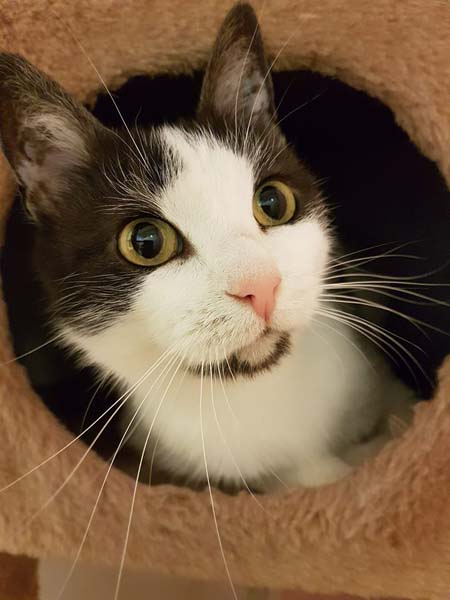

Tips för dig med skygg jourhemskatt

1
Ställ i ordning en tom kartong med något att ligga på. Ta en modell större och vänd den så att det blir en liten öppning fram och ett krypin att dra sig undan i. Obs! Ej banankartong, dessa är besprutade med gift!
Ställ fram en låda med kattsand och matskålar. Ta bort mattor från golvet och blommor från fönster.
2 Ställ in kattburen i rummet och öppna och gå ut från rummet så katten får gå ut i lugn och ro och inte blir stressad. Dra gärna för gardiner eller dra ned persienner. En katt som kommer direkt utifrån har aldrig sett ett fönster och tror att den kan ta sig ut där och kan hoppa mot rutan och skada sig.
3 Katten kommer antagligen att fräsa åt dig och springa in i sin kartong och gömma sig när du kommer in i rummet. Prata ändå med katten och låt den bli van vid din röst. Skapa gärna rutiner, t ex att tömma lådan först och sedan fylla på mat. Prata med mjuk röst och gör inga häftiga rörelser som skrämmer katten.
Får du ögonkontakt med katten så kom ihåg att blinka långsamt med ögonen. Det betyder på kattspråk att du är snäll. Att stirra en katt stint i ögonen betyder att man är aggressiv och utmanande. Träng absolut inte in katten i ett hörn utan gå undan så att katten får passera och springa in i sitt trygga bo. Det går aldrig att tvinga katter, bara att locka till umgänge på kattens villkor.
 4 Efter en tid börjar katten bli lite nyfiken på dig när du kommer in i rummet och stannar kvar utanför kartongen även när du finns i rummet. Är det en yngre katt kan man nu försöka få igång katten att leka. Prova med vippa, pälsmöss eller att försiktigt rulla med en liten boll.
4 Efter en tid börjar katten bli lite nyfiken på dig när du kommer in i rummet och stannar kvar utanför kartongen även när du finns i rummet. Är det en yngre katt kan man nu försöka få igång katten att leka. Prova med vippa, pälsmöss eller att försiktigt rulla med en liten boll.
5 De flesta hittekatter föredrar våtfoder och förstår sig ibland inte på torrfoder. De brukar äta det allra mesta. De äter massor i början då de tror att de kanske inte kommer att få något mer på ett tag och bäst att äta när det finns. Detta brukar lugna ner sig efter ett tag. Första tiden äter de bara på natten, när allt är lugnt.
6 De allra flesta katter som levt ute en längre tid klarar att gå på låda alldeles galant. Sandlådan är ju det som är mest likt att göra i naturen. Har man tagit bort mjuka material från rummet innan, går katten på låda redan första natten.
7 Man kan försiktigt börja stryka katten över ryggen när katten äter. Nudda den lite i början och träna sedan varje dag på att stryka lite mer. Efter ett tag kommer katten på att det faktiskt är skönt och börjar då försiktigt nosa mer och mer.
8 Att träna att lyfta en katt går till på samma vis som när man börjar stryka på den. Börja med att bara greppa om den och släpp. Försök sedan lyfta lite mer och mer.
9 Det här är bland det svåraste, särskilt med tanke på att stressa katten så lite som möjligt. Ett bra sätt är att utrusta sig med handskar och en stor badhandduk. Det är bra om man är två personer som hjälps åt. En person kastar badhandduken över katten, greppar runt och lyfter in den i buren. Den andra personen håller buren och håller den så tätt som möjligt så att det hela sker så fort som möjligt. Stoppa in handduken med katten. När katten väl är inne i buren brukar den lugna sig ganska fort och kryper under badhandduken. Måste man t ex till veterinär är det ett bra sätt.
10 Detta är ju individuellt för varje katt. Man får räkna med 3-4 månader och i bland mer för vissa individer. För katter som haft ett hem och sedan gått hemlösa går det oftast mycket snabbare.
11 Att katten får känna att den är "älskad för det den är". Som min veterinär så klokt säger: "-Det är bara kärlek dom behöver." Katter är mycket känsliga för sinnesstämningar så de vet precis om man är på dåligt humör. De "läser av" en redan i dörren.